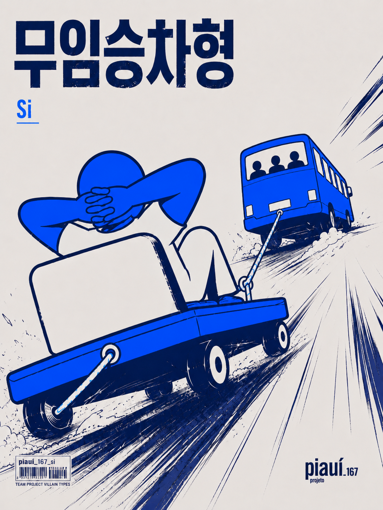

무임승차형
실질적인 기여 없지만 성과는 함께
회의에는 참여하지만 실제 결과물에 대한 기여도는 상대적으로 낮은 유형입니다. 맡은 업무의 진행이 더디거나 역할 수행이 충분히 이루어지지 않아, 부족한 부분을 다른 팀원이 보완하는 경우가 많습니다.
행동의 원인
무임승차형은 일을 하지 않으려는 의도보다는 책임에 대한 부담과 실패에 대한 걱정이 큰 경우가 많습니다.
갈등을 피하고 안정적인 상황을 선호하는 성향 때문에 의견 제시나 의사결정을 다른 사람에게 맡기고 자신이 잘 해낼 수 있을지 확신이 서지 않을 때는 핵심 업무보다 비교적 부담이 적은 역할을 선택하는 모습을 보일 수 있습니다.
상황별 대처 매뉴얼